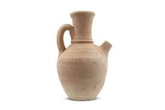
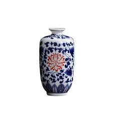
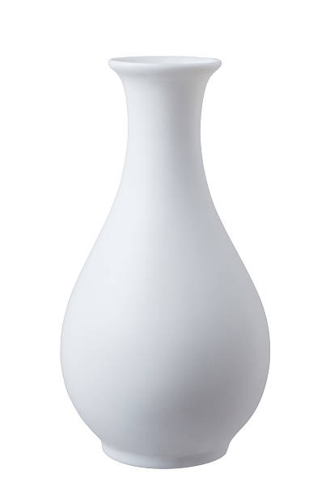
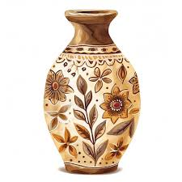
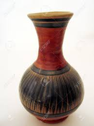
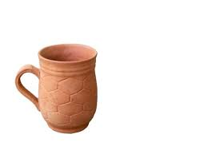

La jarra de terracota es una pieza de cerámica artesanal que evoca la sencillez y la belleza de la tradición alfarera

El jarrón es de estilo chino tradicional, conocido como porcelana azul y blanca.

Elegante jarrón blanco, perfecto para añadir un toque de sofisticación y minimalismo a cualquier espacio.

Descubre la belleza rústica de este jarrón cerámico con diseño floral. Sus tonos cálidos y motivos botánicos pintados a mano le dan un encanto artesanal y acogedor.

Jarrón artesanal de cerámica en tonos tierra y detalles tribales. Este jarrón único presenta una combinación de colores cálidos en rojo y marrón, contrastados con una base oscura y texturizada.

Descubre el encanto rústico de esta taza artesanal de terracota. Su textura única y cálida la hace perfecta para disfrutar de tus bebidas favoritas con estilo y autenticidad.